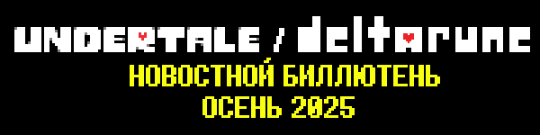
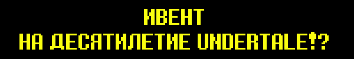
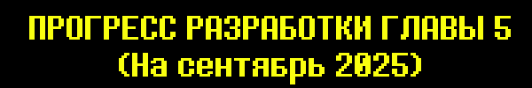
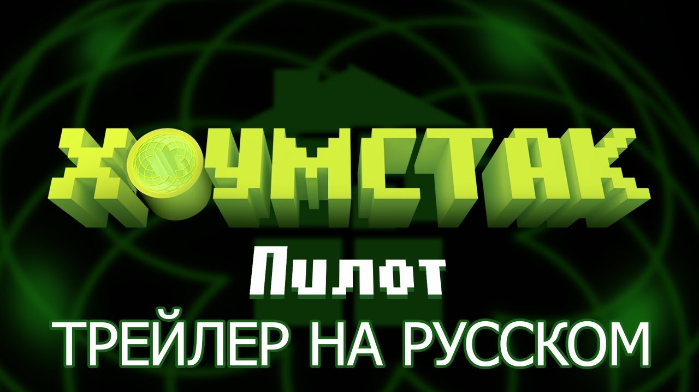

 Вернуться в Архив
Вернуться в Архив
Прошло 10 лет с выхода Undertale...
А значит...

Всё именно так!!!

Давайте устроим стрим, в котором мы поиграем в UNDERTALE, точно так же, как мы играли в DELTARUNE, главу 1!
(Смотрит на календарь и понимает, что годовщина приходится на будний день...)
Эмм...
Почему бы нам не сделать это на выходных после годовщины?
Стрим будет проходить в течение двух дней в 2 ночи по Киеву и Москве 20 и 21 сентября.
И его можно посмотреть тут.
Да, когда мы попытались пройти все это, ушло более 8 часов...
Так что нам пришлось разделить игру на две части. Нам придется пройти половину игры в один день и другую половину - в следующий.
Будет много времени чтобы поговорить... кто то вообще будет смотреть?
Все верно, вот вот вышли 3 и 4 главы DELTARUNE.
Я очень хочу оглянуться назад и поделиться своими мыслями!


Но...
Сейчас на это совсем нет времени...
Годовщина приближается.
Сейчас нет времени обсуждать это...


Вместо того, давайте поговорим о главе 5!
Некоторым из вас, возможно, интересно, о чем будет глава...
Ну, прямо сейчас незачем рассказывать вам...
Все мы любим сюрпризы, ведь так?
Если вдуматься во все, что описано в этой главе, то прямо сейчас я бы не хотел делиться всем...
Как бы то ни было, в качестве акта доброй воли я хотел бы заспойлерить одну необязательную сцену в Замке. Эта сцена будет только если вы уже видели Специальную комнату в главе 4...

В следующий раз я покажу еще сцен из городка при замке.

Это текущее состояние дел на момент 8 сентября 2025 года.
ЛОКАЦИИ
- Первые части главы 5 завершены, но нуждаются необязательных локации нуждаются в доработке.
- Возможно, последние 40% или около того игры находятся в состоянии "грубого наброска", а последние 10% - в состоянии "прототипа".
- Вероятно, около 85% катсцен были созданы в черновом виде, однако, по крайней мере, 20% из них или около того потребуют дополнительной доработки.

ПРОТИВНИКИ
- С обычными врагами в основном покончено. Один программист уже работает над шаблонами пуль обычных врагов, описанными в главе 6.
- Часть про сражение с боссами уже полностью описана, и многие атаки боссов уже завершены.
- Как только атаки будут завершены, следующей целью будет организация атак и внесение в них изменений, если это необходимо, чтобы они соответствовали атмосфере.

В СУММЕ
В главах 3 и 4 были некоторые творческие "препятствия", которые затрудняли разработку отдельных частей игры. Как сделать шоу для главы 3, как спланировать события в доме Ноэль и т.д.
Как только мы преодолели эти препятствия и расширили команду, все пошло гораздо более гладко.
В главе 5 не обошлось без препятствий! Но... мы уже прошли все очевидные этапы, так что теперь нам ничто не помешает! Нам просто нужно продолжать делать игру.

ТАЙМЛАЙН
Примерно таймлайн разработки такой.
Делать игру (мы тут)
v
ПЕРЕВОДИТЬ / ДЕЛАТЬ ИГРУ / ПОРТИРОВАТЬ ИГРУ
v
КОНЕЦ
v
ТЕСТЫ & БАГФИКСЫ
v
РЕЛИЗ
В настоящее время у нас есть один дедлайн: я хочу начать перевод к концу 2025 года. После этого изменения в игровом процессе будут приемлемы, но масштабные изменения текста и сюжета будут избегаться .С учетом локализации и тестирования... Я не думаю, что игра выйдет в первой половине 2026 года.
... Это новость, не так ли? Из последних писем вы, ребята, можете точно увидеть, сколько времени занял каждый этап разработки.
В любом случае, на этот раз у нас нет никаких внешних факторов, связанных с датой релиза. Мы выпустим игру, когда она будет готова, и будем продолжать информировать вас о ходе разработки. Спасибо!

Позвольте мне рассказать вам о Хоумстаке.
Если вы не слышали о Homestuck, то, по сути, именно этот веб-комикс положил начало моей карьере. В 2010 году я был старшеклассником и совершенно не стремился к сочинению музыки - так было до тех пор, пока я не открыл для себя этот веб-комикс, который мне очень понравился. Видите ли, в анимационных эпизодах комикса была музыка, созданная командой очень талантливых музыкантов - the Homestuck Music Team. Я очень хотел стать частью моего любимого комикса, как они. И вот однажды, когда объявили набор дополнительных музыкантов, я тут же воспользовался этой возможностью, чтобы "стать композитором". Я сочинил несколько ухорезных треков, отправил их и... автор комикса добавил меня в группу!
Что ж, я хотел быть полезным в команде, поэтому я очень старался сочинить как можно больше музыки, сочетая как можно больше мотивов, взятых у других композиторов. Именно этот опыт превратил меня в композитора, которым я являюсь сегодня.
Кроме того, благодаря моей связи с комиксом, у меня появились подписчики в социальных сетях, что очень помогло мне, когда я запустил на Kickstarter свою игру UNDERTALE. (Ну знаете, это то, что вообще позволило мне создать игру). Я тогда и связался с Темми именно из-за фанарта Homestuck, который она выложила на Tumblr.
В общем... Я действительно многим обязан Homestuck! Это помогло мне лучше разбираться в музыке, позволило мне создать свою игру, связало меня со многими важными друзьями и научило меня тому, как обращаться с фэндомом и как важно ценить своих поклонников. На мой взгляд, это, по сути, долг, который я, возможно, никогда не смогу отплатить.
Поэтому, когда меня спросили, могу ли я помочь с новой анимацией "Хоумстак", я сказал, что попробую! ... Удивительно, но запрос касался не музыки, а озвучки... Тем не менее, я чувствовал, что должен помочь.
Ожидание в студии озвучивания стало еще одним сюрпризом... Через несколько минут после начала записи с режиссером я заметил... "Эй... разве у этот тип, готовящийся к озвучки?.. Дэггетт из "Сердитых бобров"???" Оказалось, что режиссером озвучивания был Ричард Дэвид Хорвиц, который озвучивал Захватчика Зима! Запись заняла несколько часов, но было так весело, что, казалось, все закончилось практически сразу. Я вообще не профессионал, поэтому нервничал из-за результата, но Захватчик Зим сказал мне, что я хорошо поработал... так что я просто доверился ему.
В любом случае, это был мой опыт озвучки помощи!
А теперь я хотел бы показать вам трейлер! Я играю роль Джона Эгберта, парня в очках. Но сначала хочу предупредить особо впечатлительных зрителей...
В Хоумстаке много нецензурных выражений, и мне пришлось сказать несколько непристойностей, так что, если вы ребенок или предпочитаете не слышать таких слов, не смотрите!
Спасибки.


Fangamer разработали альтернативную версию OFF для Nintendo Switch и Steam. Это легендарная игра на RPG maker. Персонажи послужили источником вдохновения для Санса и Папируса.
ACC, композитор официального саундтрека (навеки бесплатного онлайн) не хотел, чтобы его музыка использовалась в ремейке, но также не возражал против того, чтобы мы сделали новые треки. Это немного странное обстоятельство, но создатель игры - Mortis Ghost - попросил меня помочь, поэтому я записал несколько треков для игры.
Их можно бесплатно скачать тут.
А еще они есть на Ютубе.
Надеюсь вам понравится!
Недавно вышло несколько музыкальных альбомов, состоящих из каверов на песни UNDERTALE и DELTARUNE, которые я хотел бы вам порекомендовать.

DELTARUNE Piano Collections, Том 1 - Уже доступна!
Несколько виртуозных фортепианных аранжировок музыки DELTARUNE в исполнении Тревора Алана Гомеса. Я очень очень рекомендую вам прослушать их. Они доступны на Youtube, если вы хотите послушать их бесплатно.
Monstercat x Undertale - Выходит 6 Октября
Альбом с электронными аранжировками UNDERTALE саундтрека, сделанный Monstercat и Firaga Records. Многие очень усердно работали над созданием этого альбома, и в нем сквозит творческий подход. В понедельник, 6 октября, выходит полный альбом, а затем и физическое издание. Тык сюда, чтобы услышать альбом одним из первых.
Когда я набрал "Тенна" в магазине Fangamer, футболка с ENA была в результатах поиска.

Это не похоже на мой обычный мерч, но, думаю, мне стоит посоветовать вам купить его...
Так надоело то что прошло десять лет
… Значит ли это что я надоедливый?
... Лады, прихраню слова для стрима.